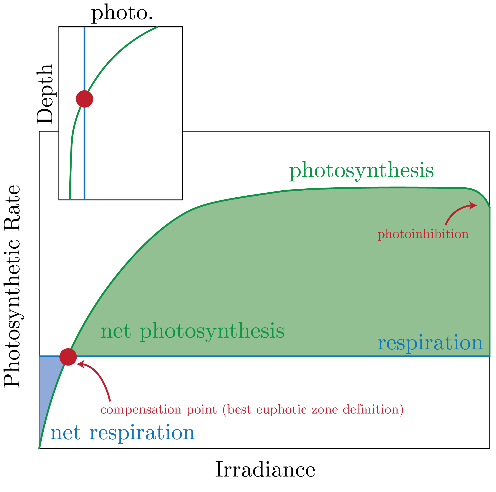

NPP and Chlorophyll maps show a 1:1 correspondence for the majority of the ocean (where we note here that maps we often see are annual averages, i.e., the Arctic has low Chlorophyll as there is no sunlight...).
One glaring divergence from this rule is the Southern Ocean, whether or not this is true is up for debate (that is, we don't really have measurements for that region as it is hard to get the measurements).
There are two particular regions that have high chlorophyll: the North Pacific and North Atlantic (Nordic Seas).
These are the regions in which there is a deep ocean mixed layer that stimulates a bloom in the Spring, as nutrients are entrained given the deep mixing.
We can also see coastal regions with appropriate winds having high chlorophyll, given the coastal upwelling.
Also, in the pacific gyes, we can see the result of convergence (low productivity) and divergence (high productivity) given corresponding upwelling.
Limitations on Production
We have the following definitions of limitation regimes:
Bottom-Up
(Macro-)Nutrients*
Light*
Temperature
CO$_2$? (Think of a bloom)
Top-Down
Zooplankton. This is a linear, first-order reaction, as it is dependent on just how many nutrients the organism comes into contact with.
Viruses (Think of a bloom, again...). This is a quadratic, second-order reaction, as it depends on (1) getting the virus and (2) having the infected organism meet another organism.
There are some regions in which we have high nutrients and low chlorophyll (HNLC) regions.
We can write all of these as a functional form of:
\begin{equation}
\text{SMS}(\text{Phyto}) = f(T, h\nu, \text{nutrients}, \ldots).
\end{equation}
Light
We can write the irradiance as:
\begin{equation}
I = I_0\exp\left[-k(\lambda)z\right],
\end{equation}
where we define the:
\begin{equation}
k(\lambda) = \underbrace{k_w}_{\text{H}_2\text{O}} + \underbrace{k_x}_{\text{CDOM}} + \underbrace{k_p\cdot P}_{\text{Phytoplankton}},
\end{equation}
as a parameter that modulates how much "stuff" takes up the light.
Oftentimes we can write the average:
\begin{equation}
\langle k_p\cdot P \rangle = \int_{-z}^0 \text{d}z \: k_p\cdot P.
\end{equation}
Of course, for primary production not all wavelengths are created equal.
Specifically, photosynthesis, and the photoreceptors in chloroplasts, have evolved to preferentially take-up blue and red wavelengths (simply: the plant is green, so it reflects that colour and does not absorb it).
This is not necessarily the case for ancillary pigments, which have a wider range of colours.
One important parameter is PAR: photosynthetically-active radiation.
It is normally considered that PAR is about 40% of the incident light on the surface ocean.
We can look at the relative penetration depths of wavelengths in Fig. 1.
Fig. 1: The relative depths of penetration for different wavelengths.
Fig. 1 also demonstrates where different pigments absorb and their relative abundances of absorbance.
PAR is often defined as the depth at which $I$ falls to 1% of its surface value.
We can sum up all of our discussions of photosynthesis with Fig. 2.

Fig. 2: The dynamics of photosynthesis and respiration and the corresponding characteristics.
Michaelis-Menten
We can write the max growth rate assuming Michaelis-Menten dynamics as:
\begin{equation}
\mu_{\text{max}}(T)= \mu_{\text{max}}\cdot Q ^{(T - 10^\circ) / 10^\circ}.
\end{equation}
Furthermore, we have the generic rate:
\begin{equation}
v = v_{\text{max}} \frac{C}{C + K_S},
\end{equation}
for a concentration $C$.
A lower $K_s$ represents a higher substrate affinity, which are species dependent.
Therefore, the species (green and blue in Fig. 3) with the higher $K_s$ can consume the nutrient faster.
This, of course, drives evolution for species to fill their niche (bringing back Darwin).
Fig. 3: Michaelis-Menten dynamics for two species, blue and green, which win out in different regimes.
An example: N Cycle
We remember the following nitrogen species in order of decreasing preferability: NH$_4^+$, NO$_3^-$, N$_2$
Then, we have a modification of the above equation of the form:
\begin{equation}
v = v_{\text{max}}\left(\frac{C_{\text{NO}_3^-}}{K_{\text{NO}_3^-} + C_{\text{NO}_3^-}}\exp\left[-\psi C_{\text{NO}_3^-}\right]\right).
\end{equation}
This $\psi$ is experimentally defined, which is our inhibition parameter.
Co-limitation
In this case, we define:
\begin{equation}
v = v_{\text{max}} \cdot\left(\frac{C_{\text{NO}_3^-}}{K_{\text{NO}_3^-} + C_{\text{NO}_3^-}} \{+ \text{ or } \times\} \frac{C_{\text{PO}_4^{3-}}}{K_{\text{PO}_4^{3-}} + C_{\text{PO}_4^{3-}}}\right),
\end{equation}
Here, the difference is if we have a linear dependence or a $\log$ dependence.
We also introduce the following:
For co-limitation, we can make the simplification:
\begin{equation}
v = v_{\text{max}} \cdot \text{min}\left(\frac{C_{\text{NO}_3^-}}{K_{\text{NO}_3^-} + C_{\text{NO}_3^-}}, \frac{C_{\text{PO}_4^{3-}}}{K_{\text{PO}_4^{3-}} + C_{\text{PO}_4^{3-}}}\right),
\end{equation}
High Nutrient Low Chlorophyll (HNLC)
One way to think about this is in the surface area to volume ratio of a sphere, which we assume our cells are:
\begin{equation}
\frac{\text{SA}}{\text{V}} = \frac{3}{r},
\end{equation}
where we note the important thing here is that it is inversely proportional to the radius $r$, which shows that we are in the diffusive regime.
Simply, is faster to diffuse across a small area.
In low nutrient conditions, we therefore have small $r$, i.e., small cells.
This is the opposite in high nutrient conditions.
The canonical example of an HNLC is the Southern Ocean.
Here, the major limitation is Fe.
In the Atlantic, it is N limited.
There are three major prokaryotic species we consider in the N limited regions, mostly cyanobacteria:
Prochlorococcus
Synechococcus
Trichodesmium
There are also diatom-diazotroph and UCYN-A, the most common of them all.
For eukayotic cells, which make carbonate shells:
Diatoms (need silica)
Coccolithophores
Dinoflagellates (good at changing environmental conditions)
This leads us to categorize the ocean by all of these conditions, from physical to chemical to biological conditions within the water masses.